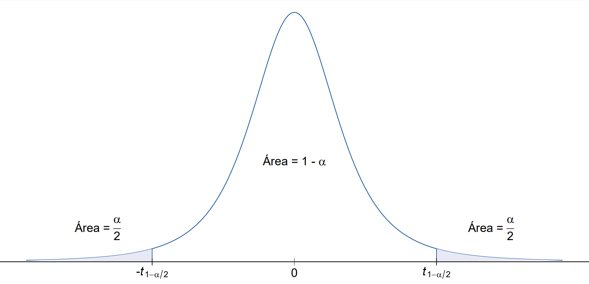

Introdução e definições iniciais
Em situações da vida real, é comum encontrarmos estimativas para quantidades desconhecidas acompanhadas de uma certa margem de erro. Quando estamos em épocas próximas de eleições, por exemplo, ouvimos a todo momento que um certo candidato tem, digamos, 40% das intenções de voto, com uma margem de erro de 2 pontos percentuais para mais, e 2 pontos percentuais para menos. Em outras palavras, estamos confiantes de que o verdadeiro valor das intenções de voto para esse candidato se encontra entre 38% e 42%. Estimativas pontuais, por mais úteis que sejam, acabam fornecendo uma informação incompleta sobre o valor estimado do parâmetro em questão, uma vez que elas não levam em consideração a variância do estimador utilizado para se obter tal estimativa. Dessa forma, como no exemplo da pesquisa eleitoral, é desejável que uma estimativa pontual seja acompanhada de alguma medida de seu possível erro, podendo essa medida ser, por exemplo, um intervalo relacionado a uma dimensão da confiança que temos de o verdadeiro valor do parâmetro estar sendo captado. Assim, nesse post, conheceremos sobre um dos tipos de estimativas intervalares mais utilizados dentro da Estatística: os intervalos de confiança. Apresentaremos a sua definição, discutiremos sobre como interpretá-los corretamente e estudaremos sobre um dos métodos existentes para obtê-los, juntamente com uma série de exemplos que permitam absorver melhor o conteúdo discutido.
Antes de mais nada, é preciso que dois conceitos importantíssimos estejam bem claros. Em primeiro lugar, considere uma certa distribuição de probabilidade f. Dizemos que n variáveis aleatórias X1, …, Xn formam uma amostra aleatória dessa distribuição se todas as variáveis aleatórias forem independentes e se a distribuição marginal de cada variável for f. Em outras palavras, para que X1, …, Xn formem uma amostra aleatória, elas devem ser variáveis aleatórias independentes e identicamente distribuídas (i.i.d.). A segunda definição é em relação ao termo estatística: chamamos de estatística qualquer função de variáveis aleatórias observáveis que não dependa de quantidades desconhecidas, sendo ela própria uma variável aleatória observável.
Com esses conceitos em mente, passemos, sem mais enrolação, para a definição de intervalo de confiança. Seja (X1, …, Xn) uma amostra aleatória de uma distribuição que dependa de um parâmetro (ou vetor de parâmetros) \(\theta\). Seja g(\(\theta\)) uma função real de \(\theta\), e sejam T1 = t1(X1, …, Xn) e T2 = t2(X1, …, Xn) duas estatísticas tais que T1 \(\leqslant\) T2 e que possuem a propriedade de que, para todos os valores de \(\theta\),
\[ P(T_1 < g(\theta) < T_2) \geqslant 1 - \alpha, \] com \(0 < \alpha < 1\). Então, o intervalo aleatório (T1, T2) é chamado de intervalo de 100(1 - \(\alpha\))% de confiança para g(\(\theta\)). Além disso, temos que
- \(\gamma = 1 - \alpha\) é chamado de coeficiente de confiança;
- T1 e T2 são chamados, respectivamente, de limites de confiança inferior e superior para g(\(\theta\)).
Se a inequação “\(\geqslant 1 - \alpha\)” se resumir a uma igualdade para todos os valores possíveis de \(\theta\), dizemos que o intervalo de confiança é exato (para distribuições contínuas, o intervalo será sempre exato; a desigualdade é útil para quando estamos trabalhando com distribuições discretas, para as quais é comum não ser possível satisfazer a igualdade). Quando observamos, de fato, os valores de X1, …, Xn por meio da amostra e calculamos os valores de T1 = t1 e T2 = t2, obtemos o intervalo (t1, t2), que é chamado de valor observado do intervalo de confiança (apesar de, na prática, também dizermos que (t1, t2) é simplesmente um intervalo de 100(1 - \(\alpha\))% de confiança para \(\theta\)).
A interpretação de um intervalo de confiança deve ser feita com cuidado. É preciso entender que o intervalo aleatório (T1, T2) possui probabilidade (1 - \(\alpha\)) de conter o verdadeiro valor do parâmetro que estamos estimando, afirmação essa que não pode ser feita para o intervalo de confiança observado (t1, t2). Isso porque, antes de colhermos a amostra, as estatísticas T1 e T2 são variáveis aleatórias e, portanto, podemos encontrar a probabilidade de \(\theta\) estar dentro do intervalo formado por elas. A partir do momento em que colhemos a amostra e observamos os valores t1 e t2 das estatísticas, entretanto, o intervalo simplesmente conterá, ou não, o valor real do parâmetro; não é mais uma questão de probabilidade. Assim, podemos dizer apenas que temos uma confiança considerável de que o intervalo observado contém o verdadeiro valor do parâmetro. A medida da nossa confiança é de (1 - \(\alpha\)) porque, antes de colhermos a amostra, (1 - \(\alpha\)) era a probabilidade de que o intervalo aleatório contivesse o verdadeiro valor de \(\theta\).
Uma outra possível interpretação do conceito de intervalo de confiança é a seguinte: se obtivéssemos várias amostras de mesmo tamanho e, para cada uma delas, calculássemos os correspondentes intervalos de confiança com coeficiente de confiança (1 - \(\alpha\)), esperaríamos que a proporção de intervalos que contivessem o verdadeiro valor do parâmetro fosse igual a (1 - \(\alpha\)).
Por fim, podemos fazer algumas considerações a respeito da escolha do valor de \(\gamma\) (lembrando que \(\gamma = 1 - \alpha\)). Como veremos nos exemplos subsequentes, conforme aumentamos o coeficiente de confiança, os valores de T1 e T2 ficam maiores e, consequentemente, a amplitude do intervalo aumenta (sendo a amplitude definida como a diferença entre os extremos superior e inferior de um intervalo). Isso, claro, é algo que deveríamos esperar, visto que intervalos maiores possuem naturalmente uma maior chance de conterem o verdadeiro valor de um parâmetro desconhecido. Com isso, para que os intervalos sejam o mais informativo possível, mantendo uma confiança elevada, é necessário que selecionemos \(\gamma\) de forma balanceada, sendo uma escolha muito comum o valor 0,95 (nesse caso, temos que \(\alpha\) = 0,05). É muito mais interessante, por exemplo, um intervalo de confiança que diz que o verdadeiro valor do salário médio de um estatístico está entre 3,5 a 6 salários mínimos do que um intervalo que diz que esse valor está entre 2 a 7,5 salários mínimos. Apesar de, com o segundo intervalo, termos uma maior confiança de que o verdeiro valor do salário médio está sendo captado, a qualidade da informação que extraímos dele é consideravelmente pior do que aquela obtida com o primeiro intervalo.
Com esses conceitos iniciais em mente, passemos, agora, para exemplos da construção de intervalos de confiança em algumas situações mais usuais, utilizando para isso um método denominado método da quantidade pivotal.
O método da quantidade pivotal
Antes de apresentarmos o método propriamente dito, comecemos, primeiramente, com uma definição. Seja (X1, …, Xn) uma amostra aleatória de uma certa distribuição f com parâmetro (ou vetor de parâmetros) \(\theta\). Seja Q uma função da amostra e de \(\theta\) (e de não mais nenhum outro parâmetro desconhecido). Se a distribuição de probabilidade de Q não depende de \(\theta\) e de nenhuma outra quantidade desconhecida, temos que Q é definida como sendo uma quantidade pivotal.
A ideia do método da quantidade pivotal, como o nome já sugere, é utilizar uma quantidade pivotal para se obter um intervalo de confiança para um determinado parâmetro. Assim, considere uma amostra aleatória de uma certa distribuição f com parâmetro \(\theta\) e uma quantidade pivotal Q. Como visto na definição acima, sabemos que Q segue uma distribuição de probabilidade que não depende do parâmetro desconhecido \(\theta\). Dessa forma, para um valor fixado de \(\alpha\), com 0 < \(\alpha\) < 1, podemos encontrar valores q1 e q2 dependentes de \(\alpha\) tais que
\[ P(q_1 < Q < q_2) = 1 - \alpha. \] Lembre-se que Q é uma função da amostra e de \(\theta\). Como queremos criar um intervalo de confiança para tal parâmetro, precisamos isolá-lo na desigualdade acima. Ou seja, temos que “inverter” a quantidade pivotal. Com um pouquinho de ajuda da álgebra, a expressão resultante desse processo será algo da forma
\[ P\left(t_1(X_1, ..., X_n) < \theta < t_2(X_1, ..., X_n)\right) = 1 - \alpha. \] Caso consigamos realizar o procedimento acima, isolando \(\theta\) e encontrando funções T1 = t1(X1, …, Xn) e T2 = t2(X1, …, Xn) que não dependam desse parâmetro, temos que (T1, T2) é um intervalo de 100(1 - \(\alpha\))% de confiança para \(\theta\). Algo a se notar é que, sendo a amplitude desse intervalo dada por
\[ t_2(X_1, ..., X_n) - t_1(X_1, ..., X_n), \] é de nosso interesse que selecionemos, entre todos os possíveis valores de q1 e q2 que satisfaçam P(q1 < Q < q2) = 1 - \(\alpha\), aqueles que tornem os valores de T1 e T2 os mais próximos possíveis, para que a amplitude do intervalo seja mínima. Dessa forma, para um valor definido de \(\alpha\), teremos o intervalo de confiança mais informativo possível. Como ainda não entramos em situações mais concretas, as definições acima podem não estar totalmente claras, mas veremos que colocá-las em prática não é tão difícil assim conforme adquirimos mais experiência. Algumas considerações a respeito de como encontrar q1 e q2 serão discutidas nos exemplos a seguir, nos quais iremos considerar amostras aleatórias da distribuição normal para a criação de intervalos de confiança para a média populacional, utilizando para isso o método explicado acima.
Intervalo de confiança para a média - com variância conhecida
Começando do exemplo mais simples, considere uma amostra aleatória (X1, …, Xn) da distribuição N(\(\mu\), \(\sigma\)^2), com variância populacional conhecida, e suponha que queremos criar um intervalo de confiança para \(\mu\). Utilizando o método apresentado acima, o primeiro passo para a resolução desse problema é encontrar uma função que dependa apenas da amostra e de \(\mu\), e cuja distribuição de probabilidade independa de tal parâmetro, para que possamos utilizar como quantidade pivotal. Note, primeiramente, que, sendo X1,…, Xn variáveis normais, independentes e identicamente distribuídas, sabemos que
\[ \bar{X} \sim N\left(\mu,\frac{\sigma^2}{n}\right), \] sendo
\[ \bar{X} = \frac{\sum_i^n X_i}{n}. \]
Dessa forma, subtraindo a média e dividindo o resultado pelo desvio padrão, podemos padronizar a variável acima, a saber
\[ Z = \frac{\bar{X} - \mu}{\sigma/\sqrt{n}} = \frac{\sqrt{n}\left(\bar{X} - \mu\right)}{\sigma} \sim N(0, 1). \]
Perceba que, como \(\sigma\) é conhecido, nada impede que esse termo esteja presente na quantidade pivotal que queremos encontrar. Logo, como Z é uma função da amostra e de \(\mu\), e como sua distribuição independe de tal parâmetro, podemos utilizá-la como quantidade pivotal para a criação do intervalo de confiança desejado. Assim, definindo um valor de \(\alpha\), com 0 < \(\alpha\) < 1, podemos encontrar z1 e z2 dependentes de \(\alpha\) tais que
\[ P\left(z_1 < Z < z_2\right) = 1 - \alpha. \]
Substituindo Z pela expressão obtida acima,
\[ P\left(z_1 < \frac{\sqrt{n}\left(\bar{X} - \mu\right)}{\sigma} < z_2 \right) = 1 - \alpha. \]
Isolando \(\mu\),
\[ \begin{align} P\left(z_1 < \frac{\sqrt{n}\left(\bar{X} - \mu\right)}{\sigma} < z_2 \right) & = P\left(z_1\sigma < \sqrt{n}\left(\bar{X} - \mu\right) < z_2\sigma \right) \\ & = P\left(z_1\frac{\sigma}{\sqrt{n}} < \bar{X} - \mu < z_2\frac{\sigma}{\sqrt{n}} \right) \\ & = P\left(-\bar{X} + z_1\frac{\sigma}{\sqrt{n}} < - \mu < -\bar{X} + z_2\frac{\sigma}{\sqrt{n}} \right) \\ & = P\left(\bar{X} - z_2\frac{\sigma}{\sqrt{n}} < \mu < \bar{X} - z_1\frac{\sigma}{\sqrt{n}} \right) = 1 - \alpha \qquad \text{(I)} \end{align} \]
Note, entretanto, que ainda precisamos definir quem serão z1 e z2, uma vez que existem infinitos pares de valores que satisfazem P(z1 < Z < z2) = 1 - \(\alpha\). Como é de nosso interesse obter o intervalo que ofereça a melhor informação possível, é necessário que encontremos z1 e z2 que minimizem a amplitude do intervalo de confiança, que nesse caso é dada por
\[ \bar{X} - z_1\frac{\sigma}{\sqrt{n}} - \left(\bar{X} - z_2\frac{\sigma}{\sqrt{n}}\right) = \frac{\sigma}{\sqrt{n}}(z_2 - z_1). \]
Dessa forma, o intervalo de valores plausíveis do parâmetro desconhecido será o menor possível, e, com isso, podemos ter uma noção mais precisa do verdadeiro valor do parâmetro que estamos estimando. Para distribuições de probabilidade simétricas, obter essas quantidades é simples: definido um valor de \(\alpha\), e considerando uma quantidade pivotal W cuja distribuição é simétrica, basta que encontremos w1 e w2 tais que
\[ P(W \leqslant w_1) = P(W > w_2) = \frac{\alpha}{2}, \] e denotamos esses valores por
\[ w_1 = w_{\alpha/2} \text{ e } w_2 = w_{1 - \alpha/2}. \]
Além disso, caso a distribuição de probabilidade da variável seja simétrica em torno de zero, é possível mostrar que a amplitude do intervalo será mínima se w1 e w2 forem valores opostos, ou seja, se w1 = -w2.
Voltando para o exemplo em questão, como a quantidade pivotal Z segue distribuição normal padrão, que é uma distribuição simétrica em torno de zero, precisamos apenas encontrar z tal que
\[ P(Z \leqslant z) = 1 - \frac{\alpha}{2}. \]
Denotaremos esse valor de z por
\[ z_{1 -\alpha/2}, \]
e utilizaremos notações semelhantes ao longo das explicações. Com isso, podemos reescrever z1 e z2 como sendo
\[ z_1 = -z_{1 - \alpha/2} \text{ e } z_2 = z_{1 - \alpha/2}. \] Para absorver melhor a explicação acima, observe o gráfico a seguir, que representa a curva da densidade de probabilidade da distribuição normal padrão.
Em uma situação prática, na qual teríamos um valor definido de \(\alpha\), poderíamos utilizar uma tabela da distribuição normal padrão para encontrar o valor z de interesse, ou mesmo utilizar a função qnorm(), do pacote básico {stats}, do R, para realizar esse processo. A função qnorm(), bem como a família de funções do R que seguem a estrutura “qnome_da_distribuição()”, representa a função quantílica: para uma dada probabilidade e para dados valores dos parâmetros da distribuição, a função retorna o valor para o qual a probabilidade acumulada até o ponto seja a probabilidade estipulada em seus argumentos.
Voltando, por fim, à equação I, temos
\[ P\left(\bar{X} - z_2\frac{\sigma}{\sqrt{n}} < \mu < \bar{X} - z_1\frac{\sigma}{\sqrt{n}} \right) = P\left(\bar{X} - z_{1 - \alpha/2}\frac{\sigma}{\sqrt{n}} < \mu < \bar{X} + z_{1 - \alpha/2}\frac{\sigma}{\sqrt{n}} \right) = 1 - \alpha. \]
Portanto, um intervalo de 100(1 - \(\alpha\))% de confiança para \(\mu\), quando a variância populacional é conhecida, é dado por
\[ IC(\mu,\ 1 - \alpha) = \left(\bar{X} - z_{1 - \alpha/2}\frac{\sigma}{\sqrt{n}};\; \bar{X} + z_{1 - \alpha/2}\frac{\sigma}{\sqrt{n}}\right). \]
Substituindo as letras por números, considere o seguinte exemplo. Suponha que, por analogia a produtos similares, o tempo de reação de um novo medicamento possa ser considerado como tendo uma distribuição Normal com média \(\mu\), desconhecida, e desvio padrão igual a 2 minutos. Considere que uma amostra aleatória de vinte e cinco pacientes foi obtida, que cada paciente recebeu o medicamento e que o tempo médio de reação do medicamento nesses pacientes tenha sido de 4,5 minutos. A pedido de um farmacêutico, queremos verificar se 6 minutos é um tempo plausível para o verdadeiro valor do tempo médio de reação do medicamento. Dessa forma, podemos resolver esse problema a partir da criação de um intervalo de confiança para \(\mu\), que é o valor populacional do tempo médio de reação. Do enunciado, sabemos que:
Podemos utilizar o intervalo de confiança obtido acima para o problema em questão, uma vez que os dados seguem distribuição normal com média desconhecida e desvio padrão conhecido e igual a 2;
O tamanho da amostra, n, é 25;
A média amostral é 4,5.
Assim, adotando um nível de confiança de 95% (logo, \(\alpha\) = 0,05), e substituindo os valores conhecidos na fórmula acima, temos:
\[ \begin{align} IC(\mu,\ 95\%) & = \left(4,5 - z_{1 - 0,05/2}\left(\frac{2}{\sqrt{25}}\right);\; 4,5 + z_{1 - 0,05/2}\left(\frac{2}{\sqrt{25}}\right)\right) \\ & = \left(4,5 - z_{1 - 0,025}\left(\frac{2}{5}\right);\; 4,5 + z_{1 - 0,025}\left(\frac{2}{5}\right)\right) \\ & = \left(4,5 - z_{0,975}(0,4);\; 4,5 + z_{0,975}(0,4)\right) \end{align} \]
Utilizando a função qnorm(), já explicada anteriormente, para encontrar o quantil da normal padrão tal que, dele para trás, a probabilidade acumulada seja de 0,975,
qnorm(p = 0.975, mean = 0, sd = 1)[1] 1.959964Aproximando o resultado acima, temos que
\[ z_{1 - \alpha/2} = z_{0,975} = 1,96. \]
Assim, voltando ao intervalo de confiança,
\[ \begin{align} IC(\mu,\ 95\%) & = \left(4,5 - 1,96(0,4);\ 4,5 + 1,96(0,4)\right) \\ & = (4,5 - 0,784;\ 4,5 + 0,784) \\ & = (3,716;\ 5,284). \end{align} \]
Portanto, um intervalo de 95% de confiança para o tempo médio de reação do medicamento é de (3,716; 5,284). Dessa forma, podemos concluir, com 95% de confiança, que 6 não é um valor plausível para o verdadeiro valor do parâmetro desconhecido \(\mu\).
Algumas considerações importantes que podem ser feitas aqui são o efeito da escolha de \(\alpha\) e do valor de n na amplitude do intervalo encontrado. Se tivéssemos escolhido como nível de confiança o valor de 99%, teríamos como resultado o intervalo (3,47; 5,53). Observe que a amplitude desse intervalo é de 2,06, enquanto a amplitude do primeiro é de 1,568. Dessa forma, a qualidade da informação que obtemos com o intervalo de 95% de confiança é claramente melhor do que a obtida utilizando uma confiança maior. Considere agora que o tamanho da amostra aleatória coletada seja n = 100, e que a média amostral se manteve em 4,5 minutos. Um intervalo de 95% de confiança para essa situação seria (4,108; 4,892), que é significativamente mais informativo do que os intervalos obtidos quando o tamanho da amostra era 25. Dessa forma, podemos perceber, como é intuitivamente esperado, que é de forte interesse obter amostras que sejam as maiores possíveis, visto que as estimativas obtidas por meio delas são consideravelmente mais precisas.
No R
Como não vivemos mais em tempos arcaicos, nos quais uma folha de papel, um lápis e tabelas de valores críticos eram os únicos artifícios disponíveis, podemos, é claro, utilizar o R para facilitar a criação de intervalos de confiança. Aproveitando o exemplo acima, suponha que os tempos de reação do medicamento observados na amostra de 25 pacientes tenham sido os seguintes:
amostra <- c(1.7, 2.8, 3.3, 6.4, 3.0, 2.0, 9.3, 3.7, 4.8, 3.0, 5.8, 2.8, 4.7, 6.1, 2.7, 4.2, 2.6, 4.6,
4.5, 7.0, 0.2, 7.0, 6.5, 7.7, 6.1)Nesse passo, criaremos uma função, a qual chamaremos de ic_media_caso1(), que calculará intervalos de confiança para o parâmetro \(\mu\), da distribuição normal, quando a variância populacional é conhecida. A função possuirá três argumentos: “dados”, que receberá o vetor de valores observados na amostra; “sigma”, que receberá o valor da variância populacional; e “gamma”, que receberá o coeficiente de confiança associado ao intervalo. Calcularemos a média e o tamanho da amostra utilizando, respectivamente, as funções mean() e length(), ambas do pacote básico {base}, e utilizaremos a já explicada função qnorm() para encontrar o valor do quantil da normal padrão (não utilizaremos os argumentos “mean” e “sigma” dessa função, uma vez que seus valores padrão são, respectivamente, 1 e 0). Construiremos o intervalo nos vetores “limite_inferior” e “limite_superior”, utilizando a formulação obtida mais acima. A função retornará um data.frame contendo algumas medidas referentes à amostra e o intervalo de confiança propriamente dito. O resultado do processo pode ser visto abaixo.
ic_media_caso1 <- function(dados, sigma, gamma) {
media <- mean(dados)
n <- length(dados)
alfa <- 1 - gamma
z <- round(qnorm(p = 1 - alfa/2), 3)
limite_inferior <- round(media - z * sigma/sqrt(n), 3)
limite_superior <- round(media + z * sigma/sqrt(n), 3)
amplitude <- limite_superior - limite_inferior
return(data.frame(n, media, limite_inferior, limite_superior, amplitude))
}
ic_media_caso1(dados = amostra, sigma = 2, gamma = 0.95) n media limite_inferior limite_superior amplitude
1 25 4.5 3.716 5.284 1.568Como podemos perceber, o resultado obtido, como já era de se esperar, foi o mesmo que o encontrado anteriormente. Apesar de um pouquinho cansativo, este primeiro exemplo servirá de base para o que está por vir. Vamos ao próximo.
Intervalo de confiança para a média - com variância desconhecida
Nessa segunda situação, considere agora uma amostra aleatória (X1, …, Xn) da distribuição N(\(\mu\), \(\sigma\)^2), com variância populacional desconhecida, e suponha que queremos novamente criar um intervalo de confiança para \(\mu\). Assim como no exemplo anterior (e em todos os que estão por vir), o primeiro passo é encontrarmos uma quantidade pivotal que nos permita construir tal intervalo. Como definido anteriormente, sabemos que
\[ Z = \frac{\sqrt{n}\left(\bar{X} - \mu\right)}{\sigma} \sim N(0, 1). \]
Lembre-se, entretanto, que estamos no caso em que \(\sigma\) é desconhecido, e por isso não podemos utilizar a função acima como quantidade pivotal nesse problema. Assim, utilizaremos dois resultados conhecidos dentro da Estatística para chegar em uma função que nos seja útil. Em primeiro lugar, se (X1, …, Xn) formam uma amostra aleatória da distribuição N(\(\mu\), \(\sigma\)^2), temos que
\[ Q = \frac{\left(n - 1\right) S^2}{\sigma^2} \sim \chi^2_{n-1}, \]
onde
\[ S^2 = \frac{\sum_{i = 1}^n (X_i - \bar{X})}{n -1} \] é a variância amostral. Além disso, é possível demonstrar que Z e Q são independentes. O outro resultado que utilizaremos para encontrar a quantidade pivotal é o seguinte: se temos duas variáveis aleatórias independentes U e W tais que
\[ U \sim N(0, 1)\text{ e } W \sim \chi^2_v, \]
então é válido que
\[ T = \frac{U}{\sqrt{W/v}} \sim t_{v}, \]
onde \(t_{v}\) representa a distribuição T de Student com v graus de liberdade. Convenientemente, definimos acima variáveis independentes Z e Q que seguem, respectivamente, distribuição normal padrão e distribuição qui-quadrado com (n - 1) graus de liberdade. Dessa forma, nada nos impede de utilizar o resultado anterior para tentarmos obter alguma função de interesse. Assim, substituindo as devidas expressões, temos
\[ \begin{align} T = \frac{Z}{\sqrt{Q/(n-1)}} & = \frac{\sqrt{n}\left(\bar{X} - \mu\right)/\sigma}{\sqrt{\frac{\left(n - 1\right) S^2/\sigma^2}{n - 1}}} \\ & = \frac{\sqrt{n}\left(\bar{X} - \mu\right)/\sigma}{\sqrt{\frac{\left(n - 1\right) S^2}{\sigma^2(n - 1)}}} \\ & = \frac{\sqrt{n}\left(\bar{X} - \mu\right)/\sigma}{S/\sigma} \\ & = \frac{\sqrt{n}\left(\bar{X} - \mu\right)}{S} \sim t_{n - 1} \end{align} \]
E voilà! Acabamos encontrando uma função que depende apenas da amostra e de \(\mu\), sem depender de \(\sigma\), e cuja distribuição independe de ambos os parâmetros desconhecidos. Logo, podemos utilizá-la como quantidade pivotal para construirmos um intervalo de confiança para \(\mu\). Assim, definido um valor de \(\alpha\), com 0 < \(\alpha\) < 1, podemos encontrar t1 e t2 tais que
\[ P\left(t_{1_{(n-1)}} < T < t_{2_{(n-1)}} \right) = 1 - \alpha. \] Substituindo T pela expressão encontrada acima,
\[ P\left(t_{1_{(n-1)}} < \frac{\sqrt{n}\left(\bar{X} - \mu\right)}{S} < t_{2_{(n-1)}} \right) = 1 - \alpha. \]
Isolando \(\mu\),
\[ \begin{align} P\left(t_{1_{(n-1)}} < \frac{\sqrt{n}\left(\bar{X} - \mu\right)}{S} < t_{2_{(n-1)}} \right) & = P\left(t_{1_{(n-1)}} S < \sqrt{n}\left(\bar{X} - \mu\right) < t_{2_{(n-1)}} S\right) \\ & = P\left(t_{1_{(n-1)}} \frac{S}{\sqrt{n}} < \bar{X} - \mu < t_{2_{(n-1)}} \frac{S}{\sqrt{n}} \right) \\ & = P\left(-\bar{X} + t_{1_{(n-1)}} \frac{S}{\sqrt{n}} < - \mu < -\bar{X} + t_{2_{(n-1)}} \frac{S}{\sqrt{n}} \right) \\ & = P\left(\bar{X} - t_{2_{(n-1)}} \frac{S}{\sqrt{n}} < \mu < \bar{X} - t_{1_{(n-1)}} \frac{S}{\sqrt{n}} \right) = 1 - \alpha \qquad \textrm{(II)} \end{align} \]
Para obtermos os valores de t1 e t2, utilizaremos o mesmo procedimento detalhado no exemplo anterior, uma vez que a distribuição T de Student também é uma distribuição simétrica em torno de zero. Assim, basta que encontremos t tal que
\[ P(T \leqslant t) = 1 - \frac{\alpha}{2},\text{ com }T \sim t_{n - 1}, \]
o qual denotaremos por
\[ t_{(n - 1;\;1 -\alpha/2)}. \]
Com isso, podemos definir t1 e t2 como sendo
\[ t_1 = -t_{(n - 1;\;1 -\alpha/2)} \text{ e } t_2 = t_{(n - 1;\;1 -\alpha/2)}. \] Para um melhor entendimento, observe o gráfico abaixo, que representa a curva da densidade de probabilidade da distribuição T de Student com n graus de liberdade.

Novamente, em uma situação prática, na qual teríamos um valor definido de \(\alpha\), poderíamos utilizar tanto uma tabela da distribuição T de Student quanto a função qt(), do R, para encontrar o valores de t1 e t2. De qualquer forma, retornando à equação II, temos:
\[ P\left(\bar{X} - t_{2_{(n-1)}} \frac{S}{\sqrt{n}} < \mu < \bar{X} - t_{1_{(n-1)}} \frac{S}{\sqrt{n}} \right) = P\left(\bar{X} - t_{(n - 1;\;1 - \alpha/2)} \frac{S}{\sqrt{n}} < \mu < \bar{X} + t_{(n - 1;\;1 -\alpha/2)} \frac{S}{\sqrt{n}} \right) = 1 - \alpha. \]
Portanto, um intervalo de 100(1 - \(\alpha\))% de confiança para \(\mu\), quando a variância populacional é desconhecida, é dado por
\[ IC(\mu,\ 1 - \alpha) = \left(\bar{X} - t_{(n-1;\;1 - \alpha/2)} \frac{S}{\sqrt{n}}; \bar{X} + t_{(n-1;\;1 - \alpha/2)} \frac{S}{\sqrt{n}} \right). \]
Algo interessante a se observar é que tanto o intervalo aleatório acima quanto o intervalo aleatório encontrado no exemplo anterior possuem 95% de probabilidade de conterem o verdadeiro valor do parâmetro \(\mu\), mesmo que suas estruturas sejam diferentes. Entretanto, como na construção do intervalo apresentado no presente exemplo foi utilizado um estimador de \(\sigma\), a amplitude média dos intervalos de confiança obtidos por esse método será maior do que a amplitude média dos intervalos obtidos quando utilizamos o método apresentado no exemplo anterior. Com isso, dizemos que o intervalo de confiança acima é menos informativo, uma vez que o intervalo de valores plausíveis para \(\mu\), nesse caso, será maior que o do intervalo de confiança construído anteriormente. Esse problema é mais evidente para tamanhos pequenos de amostra, e torna-se menos relevante conforme o valor de n aumenta.
No R
Para demonstrar a diferença entre o intervalo de confiança derivado acima e aquele derivado no exemplo anterior, podemos aproveitar o mesmo exemplo sobre o tempo de reação de um medicamento previamente discutido. Novamente, criaremos uma função, a qual chamaremos de ic_media_caso2(), que retornará o intervalo de confiança para a média populacional quando utilizamos uma amostra aleatória da distribuição normal, considerando a variância populacional desconhecida. A função se dará de forma similar àquela criada anteriormente, sendo as únicas diferenças o cálculo do desvio padrão amostral, feito com a função sd(), do pacote básico {stats} e a obtenção do quantil da distribuição T de Student através da função qt(), do mesmo pacote. O resultado do processo pode ser visto abaixo. Lembre-se que o vetor “amostra” foi criado no exemplo anterior.
ic_media_caso2 <- function(dados, gamma) {
media <- mean(dados)
n <- length(dados)
S <- round(sd(dados), 3)
alfa <- 1 - gamma
t <- qt(1 - alfa/2, n - 1)
limite_inferior <- round(media - t * S/sqrt(n), 3)
limite_superior <- round(media + t * S/sqrt(n), 3)
amplitude <- limite_superior - limite_inferior
return(data.frame(n, media, S, limite_inferior, limite_superior, amplitude))
}
ic_media_caso2(dados = amostra, gamma = 0.95) n media S limite_inferior limite_superior amplitude
1 25 4.5 2.162 3.608 5.392 1.784Como podemos perceber, o intervalo de confiança obtido acima apresenta uma amplitude levemente maior do que o intervalo obtido anteriormente (1,784 contra 1,568), no qual utilizamos a informação de que a variância populacional era conhecida durante o processo da construção do intervalo. Dessa forma, apesar de a diferença não ser gritante, podemos perceber que a utilização de uma estimativa para o valor da variância populacional acarretou, como já explicado anteriormente, em um intervalo levemente menos informativo a respeito do verdadeiro valor da média populacional.
Com isso, aqui encerramos os exemplos de intervalos de confiança para a distribuição normal construídos a partir do método da quantidade pivotal. Como considerações finais, podemos dizer que:
É possível mostrar que, para qualquer amostra de uma distribuição de probabilidade contínua, pelo menos uma quantidade pivotal existe;
Se \(\theta\) for um parâmetro de localização (ou seja, um parâmetro que determina onde a distribuição está centrada no eixo x e que, quando alterado, é responsável por transladar o gráfico da função densidade/massa de probabilidade para a esquerda ou para a direita), então a função
\[ X_i - \theta \] possui distribuição independente de \(\theta\) e, portanto, pode ser utilizada como uma quantidade pivotal;
- Se \(\theta\) for um parâmetro de escala (ou seja, um parâmetro que, quando alterado, é responsável por expandir ou comprimir o gráfico da função densidade/massa de probabilidade da distribuição), então a função
\[ \frac{X_i}{\theta} \] possui distribuição independente de \(\theta\) e, portanto, pode ser utilizada como uma quantidade pivotal.
Conclusão
Ao longo deste post, discutimos sobre o conceito de intervalo de confiança, apresentando sua definição, interpretação e exemplos. Abordamos o método da quantidade pivotal, definindo o que é, de fato, uma quantidade pivotal e construindo alguns intervalos de confiança para amostras aleatórias da distribuição normal, apresentando diversos conceitos e resultados importantes dentro da Estatística ao longo do processo. É importante destacar que encontrar uma quantidade pivotal pode não ser fácil, ou até mesmo impossível no caso de certas distribuições de probabilidade discretas. Quando isso acontece, precisamos recorrer a formas alternativas de se construir intervalos de confiança, como utilizar intervalos assintóticos, por exemplo. Recomendamos ao leitor que procure mais informações sobre esses métodos alternativos caso seja de interesse. De qualquer forma, esperamos que as definições e os exemplos aqui apresentados tenham ficado claros, de forma com que o leitor tenha conseguido adquirir algum conhecimento sobre a temática em questão. Para comentários, sugestões e colaborações científicas, entre em contato conosco através do email observatorioobstetricobr@gmail.com, ou por meio do nosso Twitter ou Instagram.
Referências
MOOD, Alexander M; GRAYBILL, Franklin A; BOES, Duane C. Introduction to the theory of statistics. 3.ed. McGraw-Hill Education, 1974.
DEGROOT, Morris H; Schervish, Mark J. Probability and Statistics. 4.ed. Addison Wesley Longman, 2011.
MAGALHÃES, Marcos N. Noções de Probabilidade e Estatística. 7.ed. Edusp, 2007.
No matching items
Citation
BibTeX citation:
@online{sant'ana herzog2022,
author = {Sant’Ana Herzog, Rafael},
title = {Intervalos de Confiança},
date = {2022-03-15},
url = {https://rafaherzog.github.io/rafasantanah/posts/2022-03-15-funcao-de-verossimilhanca/},
langid = {en}
}
For attribution, please cite this work as:
Sant’Ana Herzog, Rafael. 2022. “Intervalos de Confiança.”
March 15, 2022. https://rafaherzog.github.io/rafasantanah/posts/2022-03-15-funcao-de-verossimilhanca/.